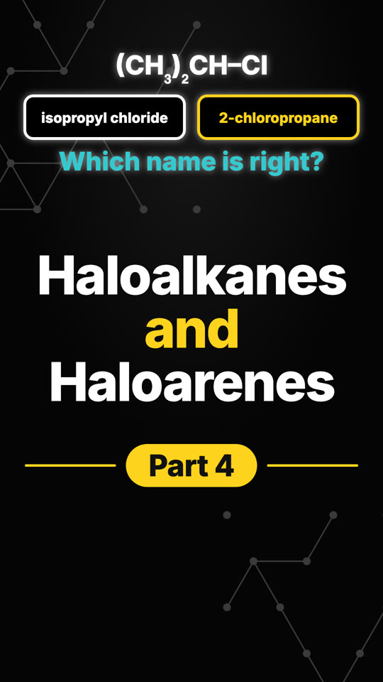

Choose your class
Every subject is laid out chapter by chapter. Each topic has a short Doodle video, notes you can download and a quick quiz.
Class 9Motion, matter, the cell and number systems: the foundations of school science and maths.ScienceMathematics21 videosClass 10Light, electricity, chemical reactions, life processes and the algebra and geometry of board year.ScienceMathematics9 videosClass 11Mechanics, thermodynamics, atomic structure, bonding, functions and the living world.PhysicsChemistryMathematicsBiology16 videosClass 12Electromagnetism, optics, modern physics, solutions and kinetics, calculus and genetics.PhysicsChemistryMathematicsBiology63 videosExtra / SupplementaryCurious questions beyond the syllabus: why the sky is blue, why we yawn, why 0.999… equals 1, and more.ScienceBiologyMathematics11 videos
Newest videos
 Markovnikov's Rule: Addition of HX to AlkenesPropene + HI gives 2-iodopropane (major) and 1-iodopropane (minor). In step 1 the π electrons of C=C move to the H of HI, forming a C–H bond on the CH₂ carbon, while the H–I pair goes to iodine (I⁻); the + is left on the middle carbon, a secondary carbocation. A 2° carbocation is more stable than a 1° one, so that pathway is favoured, and I⁻ then bonds to it. Markovnikov's rule: H goes to the double-bond carbon with more H atoms, the halogen to the one with fewer.Haloalkanes and Haloarenes · Chemistry
Markovnikov's Rule: Addition of HX to AlkenesPropene + HI gives 2-iodopropane (major) and 1-iodopropane (minor). In step 1 the π electrons of C=C move to the H of HI, forming a C–H bond on the CH₂ carbon, while the H–I pair goes to iodine (I⁻); the + is left on the middle carbon, a secondary carbocation. A 2° carbocation is more stable than a 1° one, so that pathway is favoured, and I⁻ then bonds to it. Markovnikov's rule: H goes to the double-bond carbon with more H atoms, the halogen to the one with fewer.Haloalkanes and Haloarenes · Chemistry Free Radical Mechanism: Halogenation of AlkanesButane + Cl₂ in UV light gives 1-chlorobutane and 2-chlorobutane, because butane has primary and secondary hydrogens. The free-radical chain has three stages: initiation (Cl₂ splits homolytically into 2 Cl•), propagation (Cl• abstracts an H to give HCl and a butyl radical, which takes Cl from Cl₂ and releases a new Cl•) and termination (two radicals combine). The yield of any one product is low: isomers and polychloro products form a mixture that is hard to separate.Haloalkanes and Haloarenes · Chemistry
Free Radical Mechanism: Halogenation of AlkanesButane + Cl₂ in UV light gives 1-chlorobutane and 2-chlorobutane, because butane has primary and secondary hydrogens. The free-radical chain has three stages: initiation (Cl₂ splits homolytically into 2 Cl•), propagation (Cl• abstracts an H to give HCl and a butyl radical, which takes Cl from Cl₂ and releases a new Cl•) and termination (two radicals combine). The yield of any one product is low: isomers and polychloro products form a mixture that is hard to separate.Haloalkanes and Haloarenes · Chemistry Haloalkanes from Alcohols: HX, PCl₃, PCl₅ and SOCl₂One rule: R–OH → R–X, the OH group is replaced by a halogen; only the reagent and its by-products change. HX gives water (anhydrous ZnCl₂ for 1° and 2° alcohols; reactivity 3° > 2° > 1°), PCl₃ gives H₃PO₃ (1 PCl₃ : 3 R–OH), PCl₅ gives POCl₃ + HCl, and SOCl₂ gives SO₂ + HCl, two gases that escape, so the alkyl chloride is pure. Phenol does not react this way: its C–O bond has partial double-bond character.Haloalkanes and Haloarenes · Chemistry
Haloalkanes from Alcohols: HX, PCl₃, PCl₅ and SOCl₂One rule: R–OH → R–X, the OH group is replaced by a halogen; only the reagent and its by-products change. HX gives water (anhydrous ZnCl₂ for 1° and 2° alcohols; reactivity 3° > 2° > 1°), PCl₃ gives H₃PO₃ (1 PCl₃ : 3 R–OH), PCl₅ gives POCl₃ + HCl, and SOCl₂ gives SO₂ + HCl, two gases that escape, so the alkyl chloride is pure. Phenol does not react this way: its C–O bond has partial double-bond character.Haloalkanes and Haloarenes · Chemistry The Polar C–X Bond: Polarity, Bond Length and StrengthThe C–X bond is polar: the halogen pulls the shared pair, so carbon is δ+ and the halogen δ−, and nucleophiles attack that carbon. From F to I the halogen gets bigger, so the C–X bond gets longer (139 → 214 pm) and weaker (452 → 234 kJ mol⁻¹). That is why R–I reacts fastest and R–F slowest, even though fluorine is the most electronegative halogen; and why CH₃Cl, not CH₃F, has the largest dipole moment (μ = q × d).Haloalkanes and Haloarenes · Chemistry
The Polar C–X Bond: Polarity, Bond Length and StrengthThe C–X bond is polar: the halogen pulls the shared pair, so carbon is δ+ and the halogen δ−, and nucleophiles attack that carbon. From F to I the halogen gets bigger, so the C–X bond gets longer (139 → 214 pm) and weaker (452 → 234 kJ mol⁻¹). That is why R–I reacts fastest and R–F slowest, even though fluorine is the most electronegative halogen; and why CH₃Cl, not CH₃F, has the largest dipole moment (μ = q × d).Haloalkanes and Haloarenes · Chemistry Name and Classify Haloalkanes: NCERT Questions SolvedThree NCERT exercise questions solved with one checklist: longest chain (look inside the branches), lowest locants, alphabetical order on a tie; and the class (1°, 2°, 3°) is decided only by the carbon that carries the halogen. CH₃CH₂C(CH₃)₂CH₂I is 1-iodo-2,2-dimethylbutane (1°), CH₃C(Cl)(C₂H₅)CH₂CH₃ is 3-chloro-3-methylpentane (3°), and CH₃CH(Cl)CH(Br)CH₃ is 2-bromo-3-chlorobutane.Haloalkanes and Haloarenes · Chemistry
Name and Classify Haloalkanes: NCERT Questions SolvedThree NCERT exercise questions solved with one checklist: longest chain (look inside the branches), lowest locants, alphabetical order on a tie; and the class (1°, 2°, 3°) is decided only by the carbon that carries the halogen. CH₃CH₂C(CH₃)₂CH₂I is 1-iodo-2,2-dimethylbutane (1°), CH₃C(Cl)(C₂H₅)CH₂CH₃ is 3-chloro-3-methylpentane (3°), and CH₃CH(Cl)CH(Br)CH₃ is 2-bromo-3-chlorobutane.Haloalkanes and Haloarenes · Chemistry
Naming Haloalkanes and Haloarenes: Common and IUPAC NamesEvery halide has two correct names. The common name is the alkyl group + halide (isopropyl chloride, ethyl chloride). The IUPAC name writes the halogen as a prefix (fluoro, chloro, bromo, iodo) on the longest chain, numbered from the end that gives the lowest locants; when both ends tie, alphabetical order decides (2-bromo-3-methylbutane). On benzene one halogen keeps the same name (chlorobenzene); two use o-, m-, p- in common names and 1,2 / 1,3 / 1,4 in IUPAC.Haloalkanes and Haloarenes · Chemistry